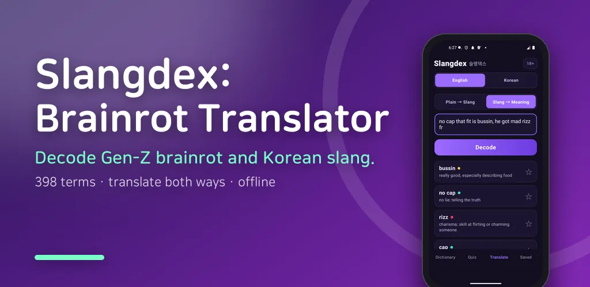
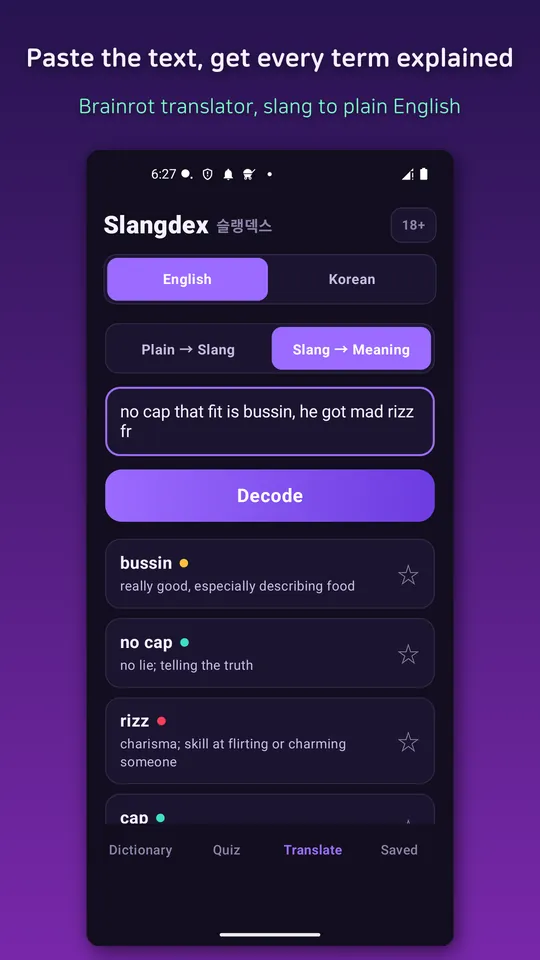
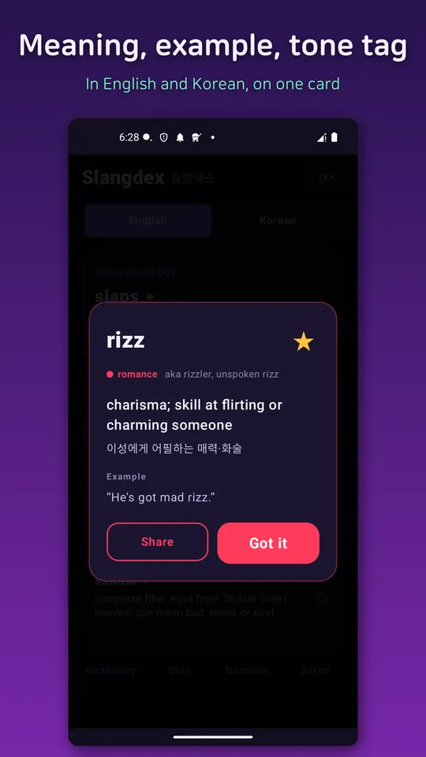
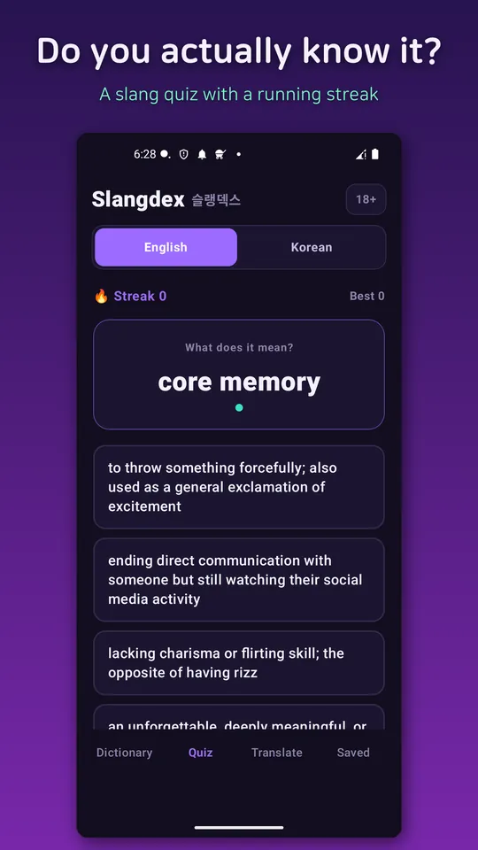
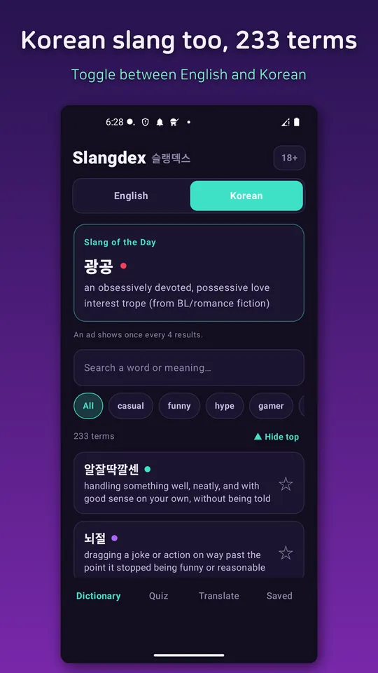
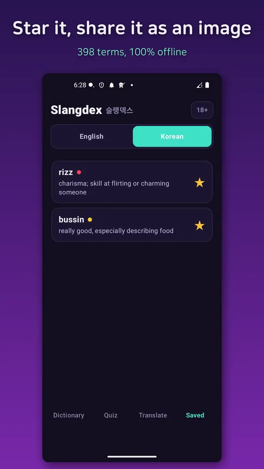

Slangdex: Brainrot Translator
Decode Gen-Z brainrot & Korean slang. Translate both ways. 398-term dictionary.






About this app
"Wait, what does that even mean?" Whether it's Gen-Z brainrot, a meme term you can't decode, or Korean 신조어 you keep seeing online — Slangdex is your pocket slang translator and dictionary.
Slangdex bridges two slang worlds: English Gen-Z / brainrot slang, and Korean internet slang (신조어).
Dictionary tab — 398 real terms
- 398 curated, actually-used slang terms (155 English + 243 Korean)
- Each with a meaning (English + Korean), an example sentence, and a tone tag
- Search and filter by tone
Quiz tab — how fluent are you?
- Multiple-choice quiz: see a term, pick the right meaning
- Keep a running streak and beat your best score
- Questions are drawn from all 398 dictionary terms
Translate tab — works both ways
- Plain → slang: a fun generator that turns normal sentences into slang
- Slang → plain: a dictionary decoder that explains slang you don't understand
- Both English and Korean, in either direction
Slang of the Day — learn one fresh expression every day. A daily notification brings you the term at 11:30 each morning (can be turned off).
Save & share — bookmark any term or translation (stored only on your device) and share it as an image card with friends.
100% offline — all content is bundled on-device. No login, no account. Look up meanings with no internet at all.
The interface is bilingual (English + Korean) and switches automatically to match your device language. Completely free.
- An optional 18+ toggle (off by default) reveals a small number of crude or sexual slang terms and their meanings; when off, only clean terms are shown.*
- Definitions and examples reflect common internet/community usage collected for fun — they are a reference, and may differ from formal or standard language.*
Android · free with ads · Developer: RealTunaLove · Store listing in 17 languages
Background story: why I built it